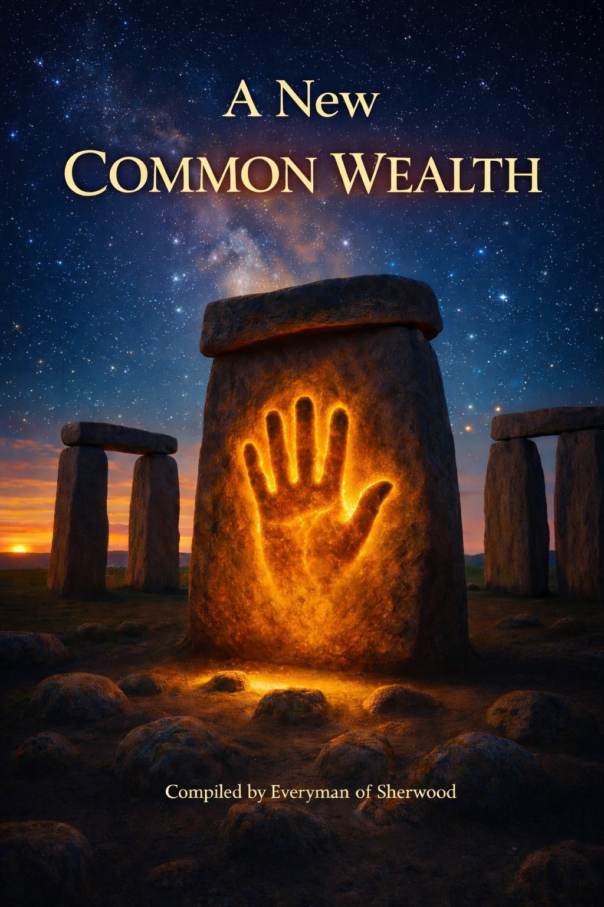
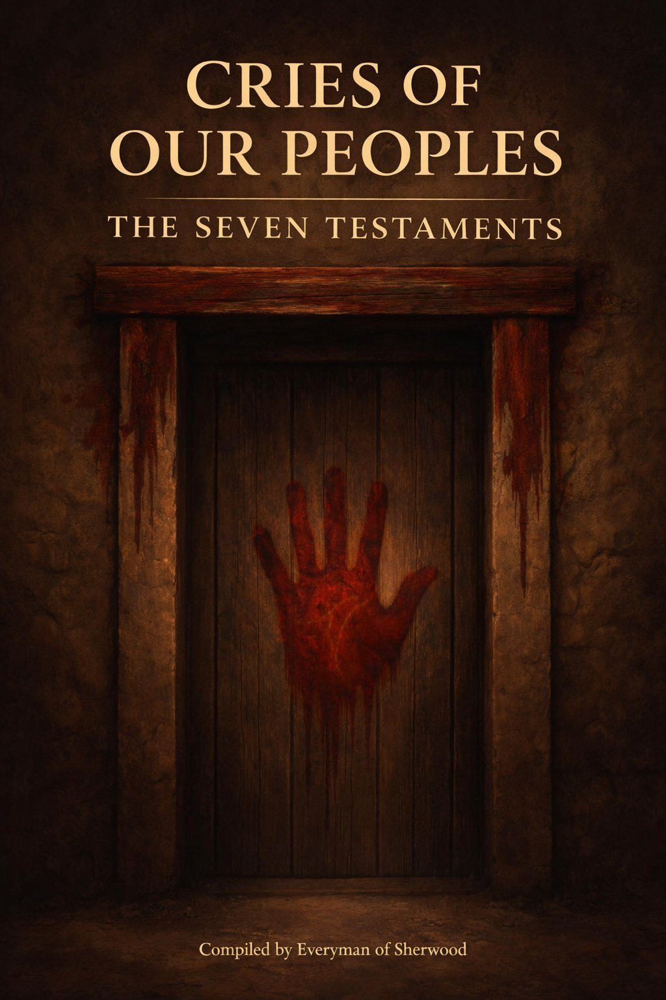

Works
Publications from the threshold

Maxima Carta
The United CommonWealth of EarthWe the People of Earth, torchbearers of the knowledge, deeds and lives of all those who came before us, do ordain and enshrine this Maxima Carta — that all humanity may live in peace, dignity, and prosperity for all time.
The open-source constitutional model establishing the rights, governing authorities, military apparatus, monetary system, and cultural institutions of The United CommonWealth of Earth.
Compiled by Everyman of Sherwood
ISBN: 978-1-0369-5475-8 · CC BY-NC 4.0

A New Common Wealth
The Political Theory Behind the Maxima CartaLearn the truth behind the political theory that brought you the MAXIMA CARTA. A deep dive into the structures of human society and political philosophy across time and cultures to show Everyman the truth of our political nature.
Discover the final groundbreaking school of political thought...not Capitalism, not Communism, but Tactical Egalitarianism that has until now been forgotten.
It is time for Everyman to enter our next chapter and realise that the truth of Humanity's political nature and optimal structure has been with us since the very beginning.
Compiled by Everyman of Sherwood
Tactical
Egalitarianism
The School of Political Thought
Tactical Egalitarianism
The Founding Political TheoryThe founding political theory of the publishing house — that society functions optimally when individuals see themselves as equal stakeholders within a system.
This is not a utopian ideal. It is a strategic framework. Equality of standing, equality of voice, equality of the right to shape the world. Not imposed from above but recognised from within.
When people understand themselves as stakeholders rather than subjects, the systems they build are stronger, more resilient, and more just. This is the intellectual foundation upon which the United CommonWealth is built.
Founded by Everyman of Sherwood

Cries of Our Peoples
The Seven TestamentsEnter the house of human suffering and learn the cost in blood and injustice that humanity has paid on the path to political stability.
Seven testaments across different time periods and conflicts showing how power has been used ineffectively in our societies.
Discover the real testimony of modern day people and how the roots and effects of human suffering impact their lives and hinder the true power hidden within human nature.
Compiled by Everyman of Sherwood
The Voices of Everyman
Collective BiographyMeet the compiler and voices behind The United CommonWealth project. In this collective biography the history of its formative thinkers is brought to light.
Discover the journey that uncovered the knowledge that was hidden in our societies which later developed the foundations for the political theory of Tactical Egalitarianism.
Read the chapters of this book and not only learn the project's origins but recognise that the story is actually a lot to do with someone like you.
Compiled by Everyman of Sherwood